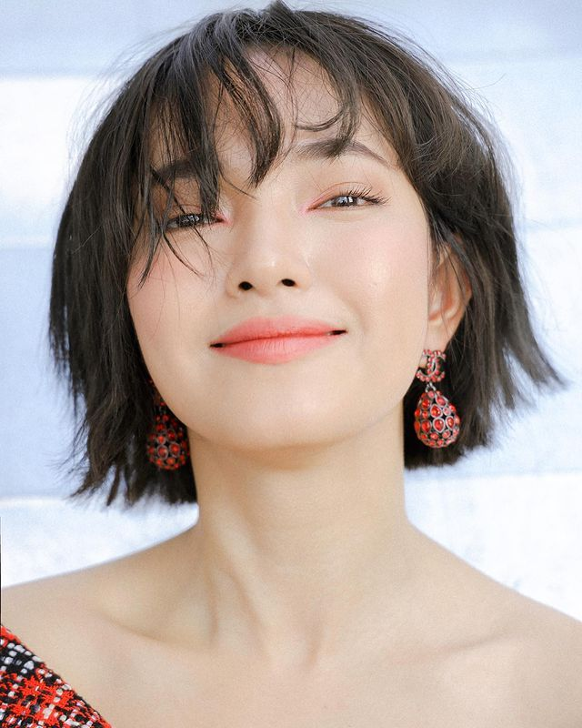
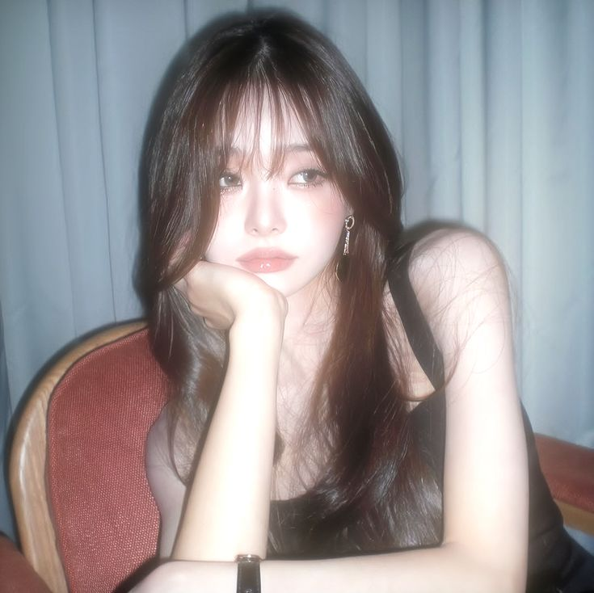

My favorite beauty bloggers
Welcome to my page, dedicated to celebrating the beauty bloggers who inspire and influence my daily routines. Here, I share my favorite beauty experts who bring fresh perspectives on makeup, skincare, and everything in between. From tried-and-true product reviews to the latest trends, these bloggers offer honest advice and creative ideas that keep me excited about beauty. Whether you're a makeup enthusiast or looking for skincare tips, these beauty bloggers provide the insight and inspiration we all need. Join me in exploring their unique takes on beauty, and let’s celebrate the magic they bring to the beauty community!

Chau Bui
She is known as "Vietnam's top fashion influencer," has a strong social media presence with over 3 million followers, and has attended major fashion weeks. When I just knew about makeup and skincare, I always watched her video and followed her social media to get idea and inspiration. She is famous for building the image of an independent woman who prioritize the self-love. Her bold and empowering style has made her a role model for many, showcasing confidence and self-expression through fashion. By following her journey, I’ve learned the importance of embracing individuality and staying true to your own unique beauty.
Her Instagram: chaubui_

Thach Trang
Thach Trang is one of my all-time favorite beauty bloggers and YouTubers. She’s the one who encouraged me to step outside my comfort zone and explore different styles to discover what truly suits me. Her videos always provide a sense of comfort and motivation, especially when I’m in need of a little inspiration. Not only does she share beauty tips, but she’s also had the chance to attend numerous fashion shows, which makes her even more relatable and inspiring. Thach Trang's journey has helped me embrace my own unique style and boosted my confidence in the beauty world.
Her Instagram: thach_trang

Free Jia
Jia's channel is a beauty wonderland featuring makeup skincare tutorials, vlogs, and Get Ready With Me videos. But that's not all, she also dives into beauty Q&A, ASMR, and daily vlogs. In her Q&A sessions, she spills the beans on her skincare routine, maintaining a sleek figure, nutritional supplements, and her favorite perfumes.
Her Instagram: dear.zia